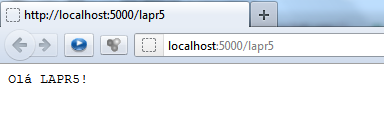

Comunicação com SWI-Prolog via protocolo HTTP
O SWI-Prolog inclui na sua
distribuição base um servidor HTTP que pode ser
utilizado para comunicação com outras linguagens desde
que estas sejam capazes de comunicar via métodos GET
e POST
do protocolo HTTP. De seguida apresentam-se alguns pequenos exemplos
de como colocar o SWI-Prolog a comunicar via HTTP.
Bibliotecas necessárias
As bibliotecas necessárias para o correcto funcionamento dos
exemplos que se seguem são 3 (estão incluídas
na distribuição de base do SWI-Prolog):
Inicialização do servidor
A inicialização do servidor dá-se executando o
predicado http_server
e escolhendo o porto em que ficará à espera de
pedidos:
http_server(http_dispatch,
[port(Port)]).
O servidor pode ser inicializado no porto 5000 se se executar:
?- http_server(http_dispatch,
[port(5000)]).
Existe um grande número de opções que podem ser
utilizadas e que se podem consultar aqui.
Associar um URL no servidor a um predicado Prolog
Associar um URL a um determinado predicado é feito pela
instrucção http_handler,
por exemplo:
:- http_handler('/lapr5',
responde_ola, []).
Aqui definimos que o pedido ao URL: http://localhost:5000/lapr5/ é feito pelo
predicado responde_ola.
Uma possível implementação deste predicado
é apresentada de seguida:
responde_ola(_Request) :-
format('Content-type:
text/plain~n~n'),
format('Olá
LAPR5!~n').
Neste caso o pedido do URL http://localhost:5000/lapr5/
feito por intermédio de um browser resultará na
visualização da página:

Receber dados via método GET ou POST e utilizá-los
na execução de um predicado
Começamos por associar um predicado para o tratamento do
pedido, por exemplo:
:- http_handler('/register_user',
register_user, []).
Neste caso estaremos a processar o endereço http://localhost:5000/register_user.
A ideia aqui será submeter informação a ser
processada pelo predicado utilizando os métodos GET e POST.
Método GET
Supondo que o predicado processa dados de um utilizador, o URL
completo poderá ser: http://localhost:5000/register_user?name='José'&sex=male&birth_year=1975.
O predicado responsável por processar esta
informação poderá ser o seguinte:
register_user(Request) :-
http_parameters(Request,
[ name(Name, []),
sex(Sex, [oneof([male,female])]),
birth_year(BY, [between(1850,10000)])
]),
register_user(Name, Sex, BY),
format('Content-type: text/plain~n~n'),
format('User registered!~n'),
format('Name: ~w~nSex: ~w~nBirth Year:
~w~n',[Name,Sex,BY]
O pedido está na variável Request e o processamento do mesmo é feito
pelo predicado http_parameters.
Para cada par Key=Value
existe um elemento na lista do segundo argumento de http_parameters com a estrutura key(Value,Options) aonde a
chave é o functor, o valor associado é o primeiro
argumento e a lista de opções que pode ser vazia tem
restrições no conteúdo de valor. O predicado
register_user/3 fará o registo do utilizador por exemplo,
numa base de dados. Os format/2
fazem o output para o cliente que pode ser XML, texto, etc.
Nota: Pode testar este
código directamente no SWI-Prolog com a
instrucção: http_client:http_get('http://localhost:5000/register_user?name=\'José\'&sex=male&birth_year=1975',X,[]).
Método POST
O http_parameters consegue processar dados enviados pelo
método POST sem alterações do lado do servidor.
Para o caso de existir um formulário com os campos name, sex
e birth_year, o código não precisa de ser alterado.
Nota: Pode testar este
código directamente no SWI-Prolog com a
instrucção: http_client:http_post('http://localhost:5000/register_user',
form_data([name='José', sex=male, birth_year=1975]), Reply,
[]).
Envio de ficheiro de texto via método POST
O envio de um ficheiro texto via método POST pode ser feito
pelo envio da informação num formulário. O
ficheiro é armazenado numa variável Prolog, por
exemplo:
send_file_post(Request) :-
http_parameters(Request,[
file(X,[])]),
format('Content-type:
text/plain~n~n'),
format('Received file: ~w~n',[X]).
Pode testar o envio do ficheiro em prolog com: http_client:http_post('http://localhost:5000/send_file_post',
form_data([file=file('C:/teste.txt')]), Reply, []). A
variável Reply armazena
a resposta do servidor.
Conclusão
Poderá interagir com uma aplicação SWI-Prolog
utilizando o servidor HTTP de forma simples. Linguagens como C# ou
Java possuem extenso suporte para comunicação via
HTTP. Poderá descarregar os exemplos apresentados para teste
aqui.